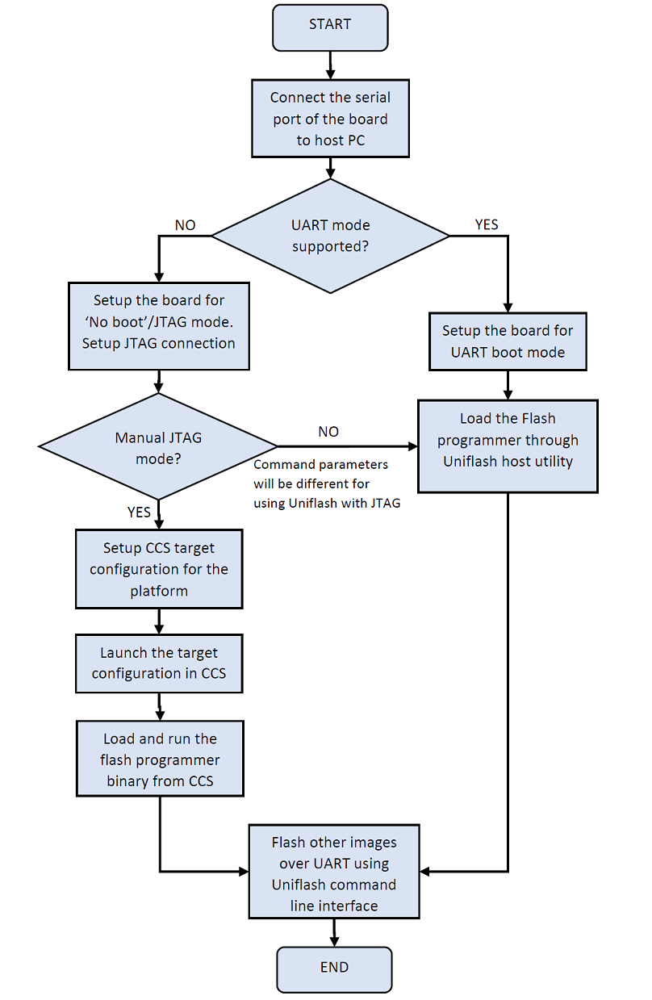

6.4. UNIFLASH¶
6.4.1. Introduction¶
Uniflash is an Unified Flashing tool which provides utilities for flashing the application software images to non-removable flash devices on TI hardware platforms.
Uniflash for TI processors platform includes two components
Flash Programmer
Host utility
Flash porgrammer runs on target platform which takes care of receiving the images from Uniflash host utility and programming them onto flash devices. Flash programmer communicates with Uniflash host utility over the UART interface.
Flash programmer which is part of the Uniflash release can be found at - “<Uniflash Root>/processors/FlashWriter/<Board Name>”
Host utility runs on host machine which provides Command-line Interface (CLI) to communicate with flash programmer. Windows and Linux are the supported OS platforms for running Uniflash host utility. Host utility uses UART or JTAG interface to download the flash programmer to the target platform. All data transfers between Uniflash host utility and Flash programmer happens over UART interface.
Refer to Uniflash Documentation for more details on Uniflash tool.
6.4.2. Supported Platforms¶
Below table shows the platforms supported by Uniflash and flash devices supported on each platform. Download mode indicates the mode of communication for downloading flash programmer to target platform.
SOC |
SOC Core |
PLATFORM |
FLASH DEVICE |
DOWNLOAD MODE |
|||||
|---|---|---|---|---|---|---|---|---|---|
SPI |
QSPI |
OSPI |
EMMC |
UART |
JTAG |
||||
Uniflash CLI |
Manual |
||||||||
J721E |
Cortex-R5 |
J721E EVM |
X |
X |
X |
X |
X |
||
where,
X : Supported
Note
For the platforms which support both UART and JTAG mode, UART is the recommended mode for downloading flash programmer. JTAG mode is supported along with UART for debug purpose.
Note
eMMC flashing through Uniflash writes the boot images into eMMC boot partitions for raw boot mode. There is no support for filesystem flashing.
6.4.3. Getting Started with Uniflash¶
6.4.3.1. Downloads¶
Latest version of Uniflash can be downloaded here
6.4.3.2. Command Options¶
Uniflash CLI supports set of commands and configuration flags which are provided through dslite script. Run the help command as described below to see all the options supported by Uniflash.
For Windows
# cd <Path to Uniflash Root Folder>
# dslite.bat --mode processors -h
For Linux
# cd <Path to Uniflash Root Folder>
# sudo ./dslite.sh --mode processors -h
This will display help menu. Following is the sample output for help command.
For more details and examples, please refer to the UniFlash Quick Start guide.
----------------------------------------------------------------------------
ProcessorSDKSerialFlash CLI Tool
Copyright (C) 2017-2021 Texas Instruments Incorporated - http://www.ti.com/
Version 1.6.0.0
----------------------------------------------------------------------------
Displaying Help..
Usage:
dslite.bat --mode processors -c <COM_Port> -f <Path_to_the_file_to_be_transfered> -d <Device_Type> -i <Image_Type> -e <erase_length> -o <Offset> -fc <1/0>
Device_Type:
0 - NAND
1 - SPI
2 - QSPI
3 - OSPI
4 - eMMC
5 - HyperFlash
6 - UFS
Image_Type:
0 - Flash
1 - MLO
2 - Uboot
3 - UImage
4 - Firmware
5 - Custom Image
erase_length:Length in Bytes
fc: Flow control enable flag. 1-Enables flow control, 0-Disables flow control
Note: File Path should not be specified for Flash Erase command
Note
Offset option(-o) expects hexadecimal value by default. The offset value can be provided with or without “0x”
Note
Flow control is not supported on all the platforms. Refer to Platform Specific Information section for more details.
6.4.3.3. Uniflash Execution Steps¶
Uniflash provides two modes of communication for downloading the flash programmer - UART and JTAG. In JTAG mode Uniflash commnad-line interface is supported for most of the platforms. Manual loading of the flash programmer through CCS is required for few cases. Below diagram shows the execution steps for flashing the application images based on the Uniflash supported mode for downloading the flash programmer.
{kind=link}
Check the Supported Platforms for details of the mode of communication supported for downloading the flash programmer on each platform.
6.4.4. Downloading Flash Programmer¶
6.4.4.1. UART Load¶
Follow below steps for downloading the flash programer over UART. Refer the HW Board user guide for boot mode settings.
Confgure boot mode of the target platform to UART boot.
Connect UART serial port of the target platform to host PC
Power cycle the target platform
Open a serial console application (Minicom, TeraTerm etc) on host PC and configure it for 115200 baud 8n1.
Make a note of the COM port number on which character ‘C’ is getting printed. This COM port number shall be used in all the command inputs to Uniflash host utility.
Close all the serial console applications on host PC.
If the host PC is running Windows OS, disconnect the serial console cable from the board and reconnet before proceeding to next steps.
Run below commands on the Host PC from Uniflash root folder
For Windows
# cd <Path to Uniflash Root Folder>
# dslite.bat --mode processors -c <COM Port> -f <Flash Programmer Binary with Full Path> -i 0
Example:
# dslite.bat --mode processors -c COM7 -f <Uniflash Root>\processors\FlashWriter\<board>\uart_<board>_flash_programmer_release.tiimage -i 0
For Linux
# cd <Path to Uniflash Root Folder>
# sudo ./dslite.sh --mode processors -c <COM Port> -f <Flash Programmer Binary with Full Path> -i 0
Example:
# sudo ./dslite.sh --mode processors -c /dev/ttyUSB1 -f <Uniflash Root>/processors/FlashWriter/<board>/uart_<board>_flash_programmer_release.tiimage -i 0
Note
Specifying the image type with -i option is mandatory while downloading the flash programmer.
Uniflash CLI shows the progress of file transfer on the command console. Following is the sample output for downloading Flash programmer over UART.
C:\ti\uniflash_7.2.0>dslite.bat --mode processors -c COM7 -f C:\ti\uniflash_7.2.0\processors\FlashWriter\<board>\uart_<board>_flash_programmer_release.tiimage -i 0
Executing the following command:
> C:\ti\uniflash_7.2.0\processors\ProcessorSDKSerialFlash.exe -c COM7 -f C:\ti\uniflash_7.2.0\processors\FlashWriter\<board>\uart_<board>_flash_programmer_release.tiimage -i 0
For more details and examples, please refer to the UniFlash Quick Start guide.
----------------------------------------------------------------------------
ProcessorSDKSerialFlash CLI Tool
Copyright (C) 2017-2021 Texas Instruments Incorporated - http://www.ti.com/
Version 1.6.0.0
----------------------------------------------------------------------------
Downloading Flash Programmer..
Enabling SysFw transfer!!!
Transferring File of size 215005 bytes
File Transfer complete!
Header Transfer complete
Transferring System Firmware..
Transferring File of size 263083 bytes
File Transfer complete!
After successful download of the flash programmer, Program the flash device or Erase the flash device by following the steps described in the corresponding secions.
6.4.4.2. JTAG Load¶
Note
The below description for JTAG load is for reference only, TI will ONLY test UART Load for Flash Programmer.
6.4.4.2.1. Manual JTAG Load¶
Follow below steps for downloading the flash programer over JTAG manually
Confgure boot mode of the target platform to ‘No Boot’ or ‘JTAG mode’
Connect UART serial port of the target platform to host PC
Setup the CCS target configuration file for the platform under test and JTAG emulator being used.
Note
Refer the Platform Specific Information for more details on additional setup needed for CCS target configuration.
Connect the JTAG port of the board to host PC running CCS.
Power ON the board
Launch the target configuration file from CCS
Connect to the target SoC core on which flash programmer is supported.
Load and run the flash programmer binary
Open a serial console application (Minicom, TeraTerm etc) on host PC and configure it for 115200 baud 8n1.
Make a note of the COM port number on which character ‘C’ is getting printed. This COM port number shall be used in all the command inputs to Uniflash host utility.
Close all the serial console applications on host PC.
If the host PC is running Windows OS, disconnect the serial console cable from the board and reconnet before proceeding to next steps.
After successful download of the flash programmer, Program the flash device or Erase the flash device by following the steps described in the corresponding secions.
6.4.5. Programming the Flash Device¶
Download the flash programmer using the steps described in section Downloading Flash Programmer before start programming application binaries to flash device.
Once the Flash Programmer is loaded and executed, use the following commands to program binaries onto the Flash Device.
For Windows
# cd <Path to Uniflash Root Folder>
# dslite.bat --mode processors -c <COM Port> -f <Path to the binary to be flashed> -d <Flash Device Type> -o <offset>
Example:
# dslite.bat --mode processors -c COM7 -f C:\ti\pdk\packages\ti\boot\sbl\binary\j721e_evm\ospi\bin\sbl_ospi_img_mcu1_0_release.tiimage -d 3 -o 0
For Linux
# cd <Path to Uniflash Root Folder>
# sudo ./dslite.sh --mode processors -c <COM Port> -f <Path to the binary to be flashed> -d <Flash Device Type> -o <offset>
Example:
# sudo ./dslite.sh --mode processors -c /dev/ttyUSB1 -f /home/user/ti/pdk/packages/ti/boot/sbl/binary/j721e_evm/ospi/bin/sbl_ospi_img_mcu1_0_release.tiimage -d 3 -o 0
Refer to Command Options Section for more details on command parameters.
Uniflash CLI shows the progress of file transfer on the command console.
Note
Multiple images like bootloader, system firmware and application etc should be flashed to get the application booting from the boot device. Refer to the Uniflash FAQ Section for additional references.
Following is the sample output for flashing RTOS application images on J721E platform.
C:\ti\uniflash_7.2.0>dslite.bat --mode processors -c COM7 -f C:\ti\pdk\packages\ti\boot\sbl\binary\j721e_evm\ospi\bin\sbl_ospi_img_mcu1_0_release.tiimage -d 3 -o 0
Executing the following command:
> C:\ti\uniflash_7.2.0\processors\ProcessorSDKSerialFlash.exe -c COM7 -f C:\ti\pdk\packages\ti\boot\sbl\binary\j721e_evm\ospi\bin\sbl_ospi_img_mcu1_0_release.tiimage -d 3 -o 0
For more details and examples, please refer to the UniFlash Quick Start guide.
----------------------------------------------------------------------------
ProcessorSDKSerialFlash CLI Tool
Copyright (C) 2017-2021 Texas Instruments Incorporated - http://www.ti.com/
Version 1.6.0.0
----------------------------------------------------------------------------
Transferring the Image to Flash Programmer..
Transferring Header Information..
Header Transfer Complete!
Flashing Image of size 164284 bytes
Flash Programming Success!
C:\ti\uniflash_7.2.0>dslite.bat --mode processors -c COM7 -f C:\ti\pdk\packages\ti\drv\sciclient\soc\V1\tifs.bin -d 3 -o 80000
Executing the following command:
> C:\ti\uniflash_7.2.0\processors\ProcessorSDKSerialFlash.exe -c COM7 -f C:\ti\pdk\packages\ti\drv\sciclient\soc\V1\tifs.bin -d 3 -o 80000
For more details and examples, please refer to the UniFlash Quick Start guide.
----------------------------------------------------------------------------
ProcessorSDKSerialFlash CLI Tool
Copyright (C) 2017-2021 Texas Instruments Incorporated - http://www.ti.com/
Version 1.6.0.0
----------------------------------------------------------------------------
Transferring the Image to Flash Programmer..
Transferring Header Information..
Header Transfer Complete!
Flashing Image of size 263072 bytes
Flash Programming Success!
C:\ti\uniflash_7.2.0>dslite.bat --mode processors -c COM7 -f C:\ti\pdk\packages\ti\binary\udma_baremetal_memcpy_testapp\bin\j721e_evm\udma_baremetal_memcpy_testapp_mcu1_0_release.appimage -d 3 -o 100000
Executing the following command:
> C:\ti\uniflash_7.2.0\processors\ProcessorSDKSerialFlash.exe -c COM7 -f C:\ti\pdk\packages\ti\binary\udma_baremetal_memcpy_testapp\bin\j721e_evm\udma_baremetal_memcpy_testapp_mcu1_0_release.appimage -d 3 -o 100000
For more details and examples, please refer to the UniFlash Quick Start guide.
----------------------------------------------------------------------------
ProcessorSDKSerialFlash CLI Tool
Copyright (C) 2017-2021 Texas Instruments Incorporated - http://www.ti.com/
Version 1.6.0.0
----------------------------------------------------------------------------
Transferring the Image to Flash Programmer..
Transferring Header Information..
Header Transfer Complete!
Flashing Image of size 114592 bytes
Flash Programming Success!
C:\ti\uniflash_7.2.0>dslite.bat --mode processors -c COM7 -f C:\ti\uniflash_7.2.0\processors\FlashWriter\j721e_evm\nor_spi_patterns.bin -d 3 -o 3FE0000
Executing the following command:
> C:\ti\uniflash_7.2.0\processors\ProcessorSDKSerialFlash.exe -c COM7 -f C:\ti\uniflash_7.2.0\processors\FlashWriter\j721e_evm\nor_spi_patterns.bin -d 3 -o 3FE0000
For more details and examples, please refer to the UniFlash Quick Start guide.
----------------------------------------------------------------------------
ProcessorSDKSerialFlash CLI Tool
Copyright (C) 2017-2021 Texas Instruments Incorporated - http://www.ti.com/
Version 1.6.0.0
----------------------------------------------------------------------------
Transferring the Image to Flash Programmer..
Transferring Header Information..
Header Transfer Complete!
Flashing Image of size 128 bytes
Flash Programming Success!
6.4.6. Erasing the Flash Device¶
Download the flash programmer using the steps described in section Downloading Flash Programmer before start executing erase command.
Once the Flash programmer is loaded and executed, use the following commands to erase the Flash Device on the target platform
For Windows
# cd <Path to Uniflash Root Folder>
# dslite.bat --mode processors -c <COM Port> -e <Erase Length in Bytes> -d <Flash Device Type> -o <Erase Offset>
Example:
# dslite.bat --mode processors -c COM7 -e 10000 -d 3 -o 20000
For Linux
# cd <Path to Uniflash Root Folder>
# sudo ./dslite.sh --mode processors -c <COM Port> -e <Erase Length in Bytes> -d <Device Type> -o <Erase Offset>
Example:
# sudo ./dslite.sh --mode processors -c /dev/ttyUSB1 -e 10000 -d 3 -o 20000
The application will output the status to the console on the Host PC. Following is the sample output on Windows.
C:\ti\uniflash_7.2.0>dslite.bat --mode processors -c COM7 -e 10000 -d 3 -o 0
Executing the following command:
> C:\ti\uniflash_7.2.0\processors\ProcessorSDKSerialFlash.exe -c COM7 -e 10000 -d 3 -o 0
For more details and examples, please refer to the UniFlash Quick Start guide.
----------------------------------------------------------------------------
ProcessorSDKSerialFlash CLI Tool
Copyright (C) 2017-2021 Texas Instruments Incorporated - http://www.ti.com/
Version 1.6.0.0
----------------------------------------------------------------------------
Erasing Flash....
Transferring Header information..
Header Transfer Complete!!
Flash Erase Success!
6.4.7. Platform Specific Information¶
6.4.7.1. J721E¶
Flash programmer requires system firmware while downloading the flash programmer through UART on J721E platform. Uniflash host CLI loads the system firmware automatically while loading the flash programmer on these platforms. Flash programmer and system firmware binary (tifs.bin) should be kept in the same folder for successful downloading of flash programmer and system firmware.
System firmware should be loaded through CCS script while loading the flash programmer through JTAG. Refer the J721E EVM CCS Setup Documentation section for details of setting up the CCS target configuration with system firmware download.
Set the dip switch SW3.1 on CP board to OFF while running the flash programmer for OSPI flashing.
Set the dip switch SW3.1 on CP board to ON while running the flash programmer for Hyperflash flashing.
6.4.8. Uniflash FAQ¶
- # How do I confirm my HW setup is proper for image download over UART?
Board should be configured for UART boot mode for downloading the images over UART. RoM bootloader sends a character ‘C’ at regular intervals on serial port in UART boot mode. Connect a serial console application on host PC to the UART port used for booting and veirfy the character ‘C’ is getting displayed, which confirms the HW setup needed for image download over UART is proper.
- # How do I verify which COM number to be used for Uniflash image download?
There may be multiple UART ports supported on the board but Uniflash image download happens on one specific UART port which is meant for UART boot. RoM bootloader and Uniflash flash programmer sends a character ‘C’ at regular intervals on the UART port used for image download. COM port number to be used for image download can be identified by checking for the character ‘C’ displayed on host PC.
- # I am running Uniflash on Windows host and Uniflash CLI is not able to open COM port. What could be the reason?
Some of the serial console application like TeraTerm on Windows changes the COM port settings which causes the COM port open failure from Uniflash. Disconnect the UART cable and reconnet before running the Uniflash commands everytime a serial console application is used to access the COM port on Windows.
- # Should the flash device be erased using Uniflash erase command before flashing the images?
No, Uniflash Erase command is provided to explicity erase the images on the flash device. Uniflash flash programmer erases the flash by default before flashing the images.
- # What all the images that need to be flashed to get my application boot?
It depends on the SoC flamily and OS being used by the application. In general, a secondary bootloader, any configuration files needed for system configuration and an application image are the minimum images that need to be flashed for booting to happen. Refer below documentation for more details
6.4.9. Rebuilding Uniflash Flash Programmer¶
Run the following command from ‘<pdk_install_path>/packages/ti/build’ folder to rebuild Uniflash on GP platform
# make BOARD=<Board Name> board_utils_uart_flash_programmer
Run the following command from ‘<pdk_install_path>/packages/ti/build’ folder to rebuild Uniflash on HS platform. Please make a note of _hs in the flash programmer target name.
# make BOARD=<Board Name> board_utils_uart_flash_programmer_hs
Note
Use gmake in the above command for building the Uniflash programmer on Windows.
<Board Name> is name of the platform
Example build commands:
make BOARD=j721e_evm board_utils_uart_flash_programmer -->> J721E GP EVM make BOARD=j721e_evm board_utils_uart_flash_programmer_hs -->> J721E HS EVMOSPI devices on K3 platform depends on the PHY tuning parameters flashed to OSPI flash memory for tuning the PHY timing parameters. This is mandatory requirement for booting to happen properly. Tuning parameters need to be flashed while flashing the boot images to OSPI memory. Refer to the section OSPI Flash Tuning for more details
Uniflash binaries will be created under the folder <pdk_install_path>/packages/ti/board/utils/uniflash/bin/<Board Name> for GP platform and <pdk_install_path>/packages/ti/board/utils/uniflash/bin/<Board Name>_hs for HS platform.
6.4.10. Upgrading Uniflash Flash Programmer from SDK¶
- Follow below steps to upgrade the flash programmer in the Uniflash to latest from SDK
Download and install the latest Uniflash package
Copy the flash programmer binary ‘pdk/packages/ti/board/utils/uniflash/target/bin/<Board_Name>/uart_<Board_Name>_flash_programmer_release.tiimage’ to ‘<Uniflash Root>/processors/FlashWriter/<Board_Name>’
Copy the system firmware binary ‘’pdk/packages/ti/drv/sciclient/soc/<SoC Version>/tifsxxx.bin’ to ‘<Uniflash Root>/processors/FlashWriter/<Board_Name>’ with the name ‘tifs.bin’
Note
Uniflash flash programmer pre-built binaries are provided as part of SDK. Follow the steps mentioned in section Rebuilding Uniflash Flash Programmer for rebuilding the flash programmer.